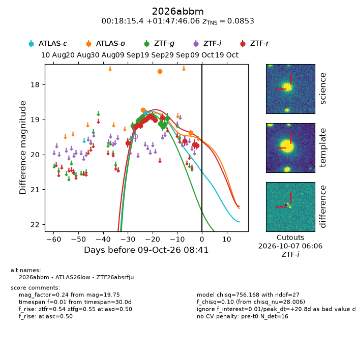
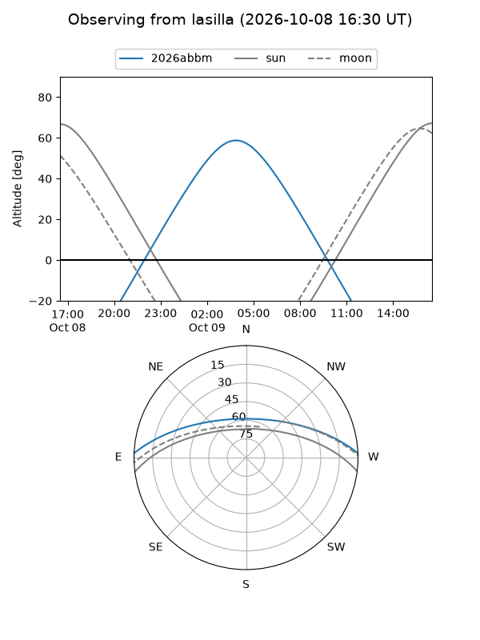
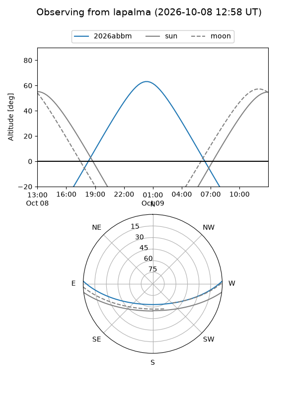
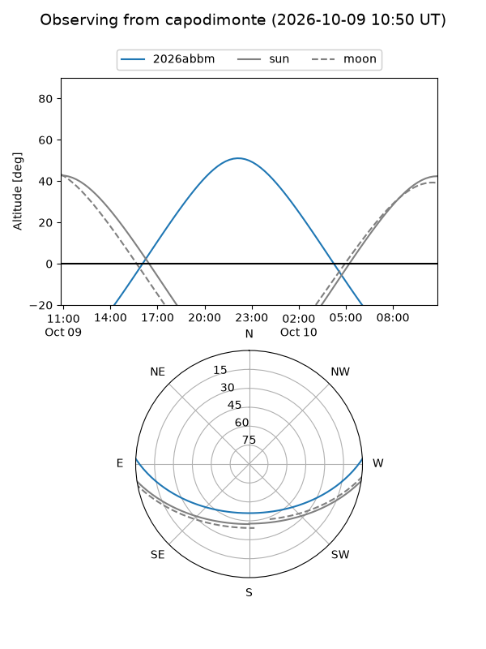
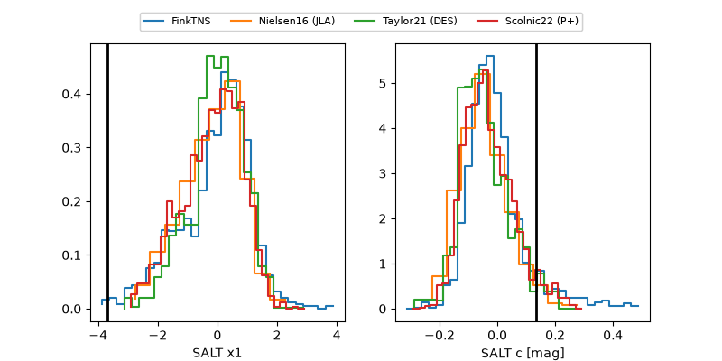

2026abbm
Target 2026abbm at 2026-10-09 10:21
Aliases and brokers:
FINK-ZTF: ztf.fink-portal.org/ZTF26absrfju
Lasair-ZTF: lasair-ztf.lsst.ac.uk/objects/ZTF26absrfju
ALeRCE-ZTF: alerce.online/object/ZTF26absrfju
YSE-PZ: ziggy.ucolick.org/yse/transient_detail/2026abbm
TNS name: wis-tns.org/object/2026abbm
Direct TNS query: direct search
alt names
ZTF26absrfju (ztf,fink_ztf)
2026abbm (tns,yse)
ATLAS26low (atlas)
Coordinates:
equatorial (ra, dec) = 4.5640,+1.79613
equatorial (HMS+DMS) = 00:18:15.36,+01:47:46.06
galactic (l, b) = (106.1733,-59.99154)
Flags:
TNS type: SN Ia
TNS redshift: 0.0853
peak dt: +20.8
Photometry:
last atlasc=18.78, atlaso=19.38, ztfg=18.96, ztfr=19.75
1 atlasc, 3 atlaso, 12 ztfg, 14 ztfr detections
Lightcurve

Visibility



Additional plots
